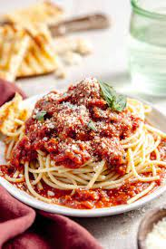

Mexican Spaghetti

Description
There's nothing like classic spaghetti and meat sauce to bring people together around the dinner table. This homemade spaghetti sauce with ground beef is to die for. With great flavor and a spicy twist, it will leave you wanting more.
Ingredients
- 2lbs Ground Beef
- 1 Box Noodles
- 3 Cans Rotel Of Perferred Flavor
- 3 Jars Spaghetti Sauce
- Mushrooms
- Minced Garlic
- Creole
- Onion Powder
- Salt and Pepper
How To Make
- Step 1: Grab a skillet and set it to medium.
- Step 2: Add a slapsh of oil, then add mined garlic, and chopped mushrooms into skillet. Cook until mushrooms are softened.
- Step 3: Cook ground beef and add all seasonings. Cook till golden brown and drain the grease.
- Step 4: Bring water to a boil. Fill a large pot with plenty of cold water and salt.
- Step 5: Add the spaghetti noodles.
- Step 6: Cook spaghetti until al dente.
- Step 7: Drain pasta and set aside.
- Step 8: In the same pan that the meat was cooked, add jars of sauce and cans of rotel.
- Step 9: Then add the meat.
- Step 10: Bring sauce to a low simmer and season to taste.
- Step 11: Once its simmered for a while you are ready to serve.
- Step 12: Serve and Enjoy!